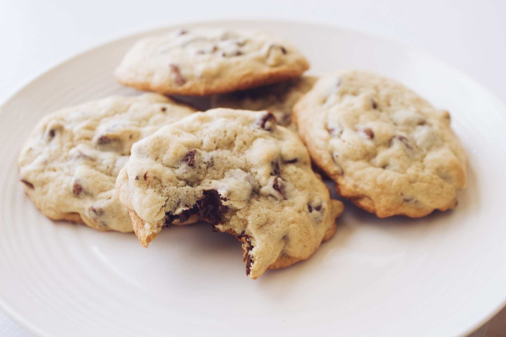
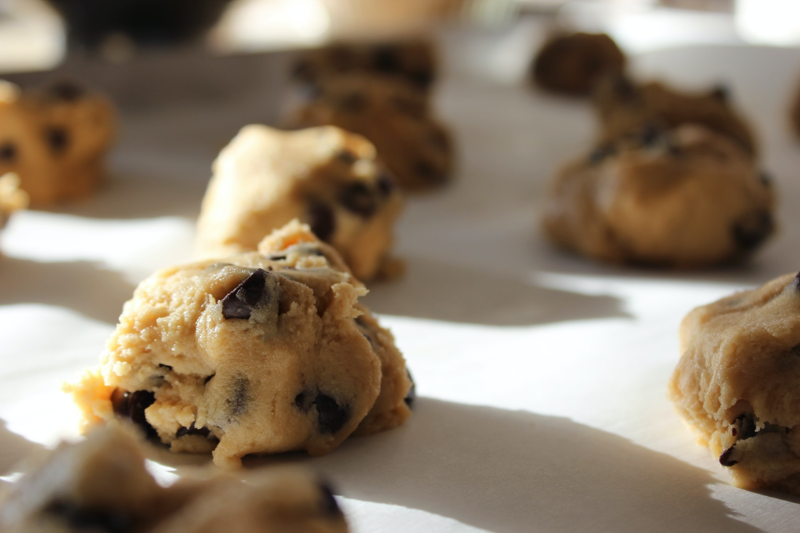
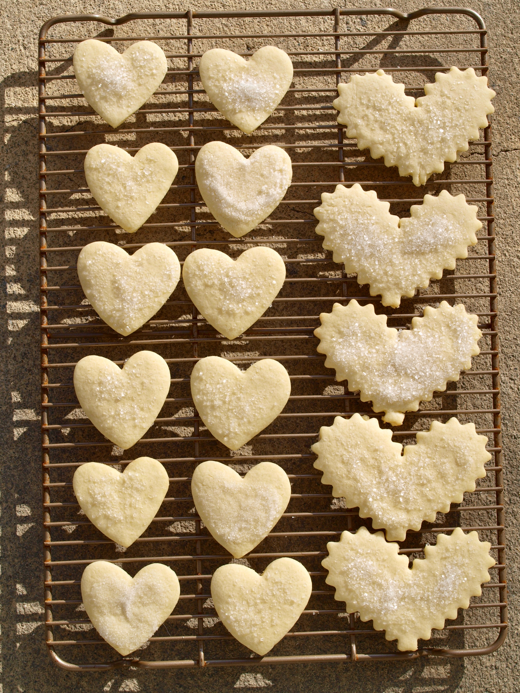

Why Are My Recipes Formatted Differently?
Have you ever been cooking from a recipe and discovered that you added an ingredient at the wrong time? Have you ever gotten annoyed as you scanned back and forth between the ingredients list at the top of the recipe and the directions at the bottom of the recipe? I hate the way that recipes make you toggle back and forth between the ingredients and the actual step that you’re on! It’s so easy to get lost and miss an ingredient or add things in the wrong order. On this site, you will find a collection of my favorite recipes in an easy-to-read format. For more information on how to read my recipes, please see the Recipe Tutorial page.
Dessert First!
I have a huge sweet tooth, so it’s only natural for me to start my website with my favorite type of food: desserts. My very favorite dessert is cookies. I love pretty much every cookie except for oatmeal raisin. (And I can still eat an oatmeal raisin cookie, but I’ll probably pick out all of the squishy raisins.)
Chocolate Chip Cookies
This is my favorite chocolate chip cookie recipe for two reasons. First, they taste amazing. That’s the obvious reason. Second, you don’t have to think ahead and get butter to room temperature. You just melt your butter in the microwave and it works great.
| Ingredients | Directions |
|---|---|
| 12 T. melted butter 1 C. light brown sugar 1/2 C. sugar |
Cream together |
| 1 large egg 1 large egg yolk 2 t. vanilla |
Mix in |
| 2 1/8 C. flour 1/2 t. salt 1/2 t. baking soda 2 C. chocolate chips |
Add and mix together |
| Bake at 350 for 10-12 min. |
Peanut Butter Chocolate Chip Cookies
Sometimes peanut butter chocolate chip cookies make you want to drink a gallon of milk per cookie. They have a rep for being kind of dry and crumbly. That’s not the case with these bad boys! By baking at 375 for a shorter amount of time, you get a cookie that is slightly crispy on the outside and gooey in the middle. The real key to these cookies is to never overbake them. I rarely cook them for more than eight minutes. They won’t look totally done when you take them out of the oven, but that’s okay. As they cool on the cookie sheet, they will set up and be fine.
| Ingredients | Directions |
|---|---|
|
1 C. butter, softened 1 C. peanut butter 1 C. brown sugar 1 C. sugar |
Cream together |
|
2 eggs 2 1/2 C. flour 1 1/2 t. baking soda 1 t. baking powder 2 C. chocolate chips |
Mix in |
| Bake at 375 for 8-10 min. | |
| Cool slightly before removing from the pan |
Sour Cream and Nutmeg Sugar Cookies
These sugar cookies are super fluffy and the nutmeg adds a unique twist. This is the sugar cookie recipe that I grew up with. Every time I make these, it reminds me of Halloween because my mom usually made these at Halloween.
| Ingredients | Directions |
|---|---|
|
4 C. flour 1 t. baking powder 1 t. baking soda 3/4 t. salt 3/4 t. nutmeg |
Whisk together |
|
1 C. shortening |
Cream in a separate bowl |
|
1 1/2 C. sugar 2 t. vanilla 2 eggs |
Add to shortening and cream until fluffy |
| 3/4 C. sour cream | Alternate adding sour cream and flour mixture to shortening until smooth after each addition |
| Roll dough between sheets of waxed paper and chill for 1 hour | |
| Cut dough into shapes | |
| Bake at 350 for 10-12 min. |